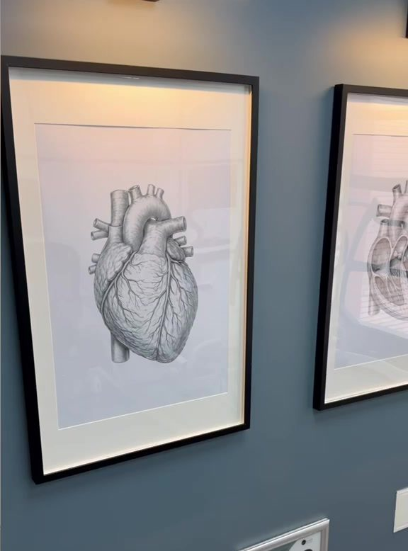
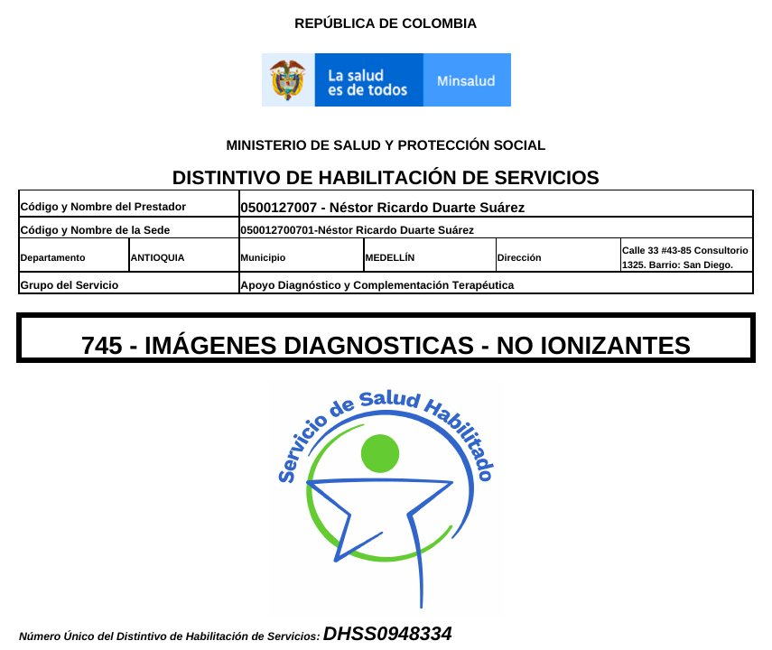

En CARDIODUARTE le atiende directamente el especialista. Le explicamos cada examen antes de hacerlo, resolvemos sus dudas con calma y le entregamos resultados que usted pueda entender.
Cuidamos su corazón con tiempo, cercanía y un diagnóstico claro. Cardiología yecocardiografía
15+años de trayectoria
Sobre el doctor
Un cardiólogo que le explica, le escucha y le acompaña
Cardiólogo y ecocardiografista con más de 15 años de trayectoria en el diagnóstico y el tratamiento de enfermedades del corazón. Ha liderado servicios de cardiología y hoy atiende en Medellín a pacientes que buscan una valoración cuidadosa y cercana.

Mi objetivo
“Cada paciente merece entender qué tiene su corazón y qué podemos hacer juntos.” Ejemplo
Más de 15 años; jefatura de servicio de cardiología
Atiende
Adultos · Particulares, con póliza o medicina prepagada (según cobertura)
302 · Cardiología
Consulta externa · Distintivo DHSS0948333

745 · Imágenes diagnósticas no ionizantes
Apoyo diagnóstico · Distintivo DHSS0948334
Prevención
Pequeños hábitos que cuidan su corazón
Recomendaciones generales de salud cardiovascular. No reemplazan la valoración médica ni las indicaciones de su médico tratante. Ejemplo · validar con el Dr. Duarte
Conozca sus cifras
Mida su presión arterial y pregunte por su colesterol y su glucosa. Muchas veces no dan síntomas.
Muévase cada día
Caminar a paso rápido suma. Si va a empezar a hacer deporte, consulte antes.
No fume
Dejar el cigarrillo es de las decisiones que más protegen su corazón, a cualquier edad.
Coma con menos sal
Más frutas, verduras y alimentos frescos; menos sal, azúcar y productos ultraprocesados.
Descanse y maneje el estrés
Dormir bien y darse pausas también es cuidar la presión arterial y el ritmo del corazón.
Hágase chequear
Si tiene antecedentes familiares, hipertensión o diabetes, una valoración a tiempo marca la diferencia.
Señales de alarma: no espere una cita
Dolor u opresión en el pecho, falta de aire repentina, desmayo o palpitaciones con malestar requieren atención inmediata. Acuda al servicio de urgencias más cercano o llame al 123.
Su cita
Agende su cita
Le acompañamos desde el primer mensaje hasta la entrega de su resultado.
Torre Médica Metropolitan Salud Calle 33 n.º 43-85, consultorio 1325 Avenida El Poblado antes de San Diego, frente a la estación de Metroplús. Medellín. Abrir en Google Maps · conscardioduarte@gmail.com
1
Escríbanos
Por WhatsApp o con el formulario de esta página. Cuéntenos qué necesita y si tiene orden médica.
2
Confirmamos con usted
Le proponemos día y hora, le decimos el valor o la cobertura y le enviamos la preparación del examen.
3
Prepárese
Siga las indicaciones de su examen. Si tiene dudas, escríbanos antes de la cita.
4
Le atendemos
Llegue 15 minutos antes con su documento y exámenes previos. Sale con su resultado explicado.
Solicitud de cita
Preparación
Cómo prepararse para su examen
Indicaciones generales. Siga siempre lo que le indique el consultorio al confirmar su cita. No suspenda medicamentos sin orden médica. Ejemplo · validar con el Dr. Duarte
Ecocardiograma transtorácico
No requiere ayuno.
Tome sus medicamentos como de costumbre.
Use ropa cómoda de dos piezas.
Duración aproximada: 30 a 40 minutos.
Ecocardiograma de estrés y prueba de esfuerzo
Comida liviana 2 a 3 horas antes.
Ropa deportiva y tenis.
Pregunte si debe suspender algún medicamento para el corazón antes del examen.
Venga acompañado si es estrés farmacológico.
Electrocardiograma
No aplique cremas ni aceites en el pecho ese día.
Dura unos 10 minutos.
Holter de ritmo
Báñese antes de la cita: el equipo no se puede mojar.
Haga su vida normal y anote en el diario sus síntomas y la hora.
Regrese al día siguiente (o a las 48 horas) para retirarlo.
Monitoreo de presión arterial (MAPA)
Use una camisa de manga holgada.
Mantenga el brazo quieto y estirado cada vez que el brazalete infle.
Anote horas de sueño, comidas y medicamentos.
Qué traer a toda cita
Documento de identidad.
Orden médica y autorización, si su póliza o prepagada la exige.
Exámenes y lista de medicamentos actuales.
Preguntas frecuentes
Preguntas frecuentes
¿Cómo pido una cita?
Escríbanos por WhatsApp al 318 798 4545 o deje sus datos en el formulario de esta página. Le proponemos día y hora y le enviamos la preparación del examen.
¿Atienden pólizas y medicina prepagada?
Atendemos pacientes particulares, con póliza o con medicina prepagada, según la cobertura. Escríbanos con el nombre de su aseguradora y le confirmamos cómo puede ser atendido. Ejemplo · ajustar según convenios
¿Qué debo llevar el día de la cita?
Documento de identidad, la orden médica y la autorización si su póliza o prepagada la exige, y sus exámenes y la lista de medicamentos actuales.
¿Necesito orden médica?
Para la consulta particular no. Para exámenes cubiertos por su aseguradora, normalmente sí: confírmelo con su póliza o prepagada antes de la cita.
¿Dónde están ubicados?
Torre Médica Metropolitan Salud, Calle 33 n.º 43-85, consultorio 1325. Avenida El Poblado antes de San Diego, frente a la estación de Metroplús. Medellín.
¿Cuál es el horario de atención?
Lunes a viernes, de 7:00 a. m. a 5:00 p. m. Validar
Su próximo paso
Haga de su corazón una prioridad
Ya sea un chequeo o un examen puntual, le ayudamos a planear su cita.